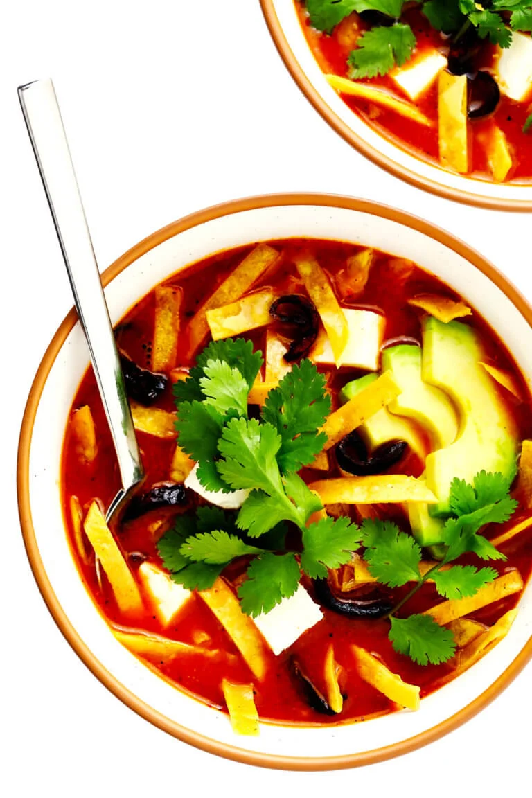

Sopa AZTECA

Description
This delicious shredded chicken soup packs a powerful savory and zesty flavor with its charred ingredients, spices, herbs and freshly fried tortilla chips!
Ingredients
- Dried chiles (play around with it! pick a chile that makes your mouth water)
- Tomatoes
- Onion and garlic
- Stock (I usually use chicken stock, but a veggie broth might go well here too)
- Dried oregano
- Salt and pepper
- Cilantro!
- Tortilla strips (I like to make my own from corn tortillas)
- Avocado (topping)
- Chicken(topping)
- Cheese(topping)
- Jalapenos (optional topping if you like a little kick!)
Steps
- toast the chiles and tomatoes, don't be afraid to give them a little char!
- Saute the onion and garlic (don't dice that garlic!)
- Blend it all together with the broth on a medium heat
- Simmer while preparing addons
- Season the broth to your liking
- Ladel the broth into bowels and add a healthy bit of toppings